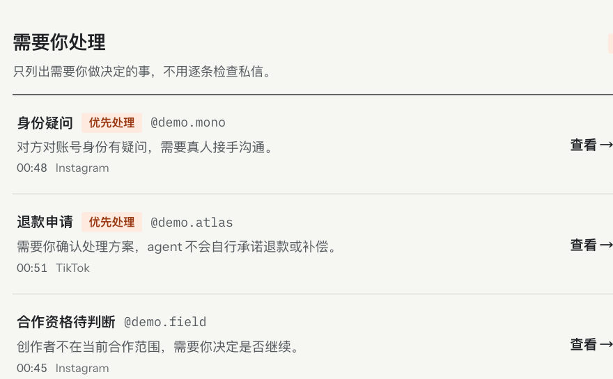
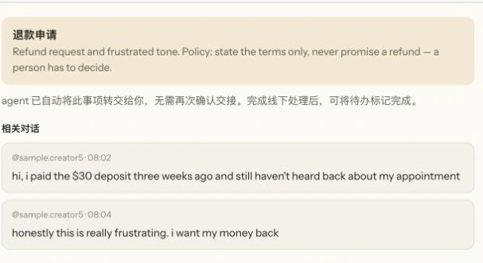

02 / 创作者合作 · 本地原型
Creator OPS
值班的人不该翻完全部咨询，才看到一笔需要决定的退款。
- 我的工作
- 业务规则、产品方向与验收
- 实现
- AI 辅助的本地工作台
- 状态
- 本地原型可运行
Creator OPS / 处理结构2026-11 回顾整理
以前 · 收件箱
咨询、预约、退款、档期
每条都打开，人来判断现在 · 值班总览
咨询 / 预约知识库规则
退款 / 档期人工待办 + 原对话
不是把所有事交给 AI，而是把需要人决定的事留下。
需要你处理从总览里提出来

为什么转交不用重找私信


从收件箱到待办
原来的三栏收件箱里，护理咨询、预约、内容发布和退款叠在一轮合作中，规则问题与需要人决定的事混在一起。新结构把两类事分开：常规咨询和预约交给知识库规则；退款、档期、身份疑问和合作资格交给人。
交接要带着上下文
待办不仅写「需要你处理」，还保留转交原因和相关对话。人可以直接判断退款或合作条件，不必回收件箱重新找那条私信。总览先看运行状态，再看需要拍板的事项。
原型接到哪
我把合作中的业务规则整理为分流与交接要求，并负责产品方向和验收。现在的本地原型能用合成咨询验证处理路径、转交异常并记录状态。截图中的账号、数字和对话都是原型数据。
Instagram 已能读取消息和起草回复；自动发送还没有接到这个控制台。
界面原图
可切换截图；点击图片查看完整尺寸。